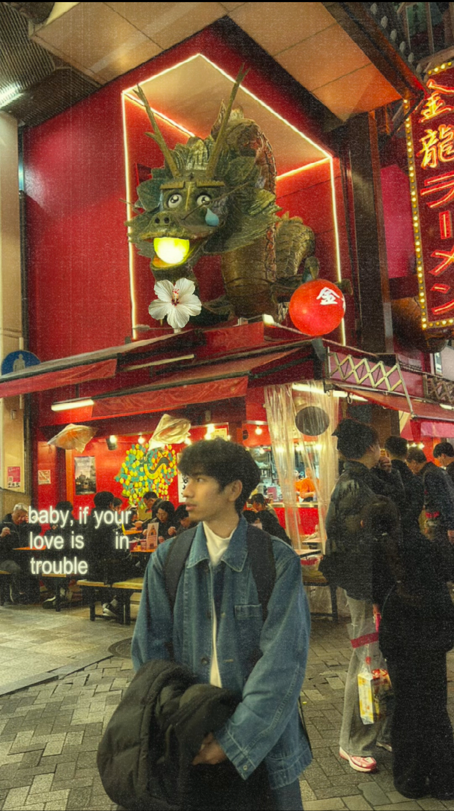

We advance the frontiers of Natural Language Processing, low-resource AI, and computational perception—building systems that understand and generate human language with unprecedented depth.
Our lab pushes boundaries across three interconnected research pillars, each addressing fundamental challenges in artificial intelligence.
Developing robust NLP models for under-represented and morphologically complex languages, including Burmese and other Southeast Asian scripts, where labeled data is scarce.
Investigating novel transformer architectures, efficient attention mechanisms, and self-supervised learning paradigms for scaling AI systems across resource-constrained environments.
Bridging language, vision, and audio modalities to build unified perceptual systems capable of understanding the world through multiple sensory channels simultaneously.
Examining bias, fairness, and cultural representation in large language models, with a focus on ensuring AI systems serve diverse global communities equitably.
Automated extraction of structured knowledge from unstructured text at scale, powering next-generation search, reasoning, and question-answering systems.
Combining NLP with robotic control systems to create language-conditioned agents that navigate and manipulate physical environments through natural instruction.
A multidisciplinary group of researchers united by a shared mission to advance the science of language and intelligence.

Pioneering research in low-resource NLP for Southeast Asian languages, with a focus on Burmese morphology, neural machine translation, and indigenous language preservation through computational methods.
Educational specialist focused on integrating AI into learning environments, developing curricula that leverage NLP for enhanced language education.
Bridges natural language processing with robotic perception and control, developing language-conditioned manipulation systems and conversational interfaces for human-robot collaboration.
Peer-reviewed research and active development initiatives that represent our core intellectual contributions to the field.
Building a 7B parameter foundation model trained on 50GB+ of curated Burmese text, with instruction tuning for downstream NLP tasks across Southeast Asian dialects.
Vision-language model for complex document parsing, combining OCR, layout analysis, and natural language reasoning for Burmese and English administrative documents.
End-to-end system enabling natural language control of robotic arms in industrial settings, with real-time grounding, error correction, and uncertainty estimation.
Comprehensive benchmark suite covering 12 NLP tasks across 8 Southeast Asian languages, with standardized evaluation protocols for future model comparisons.